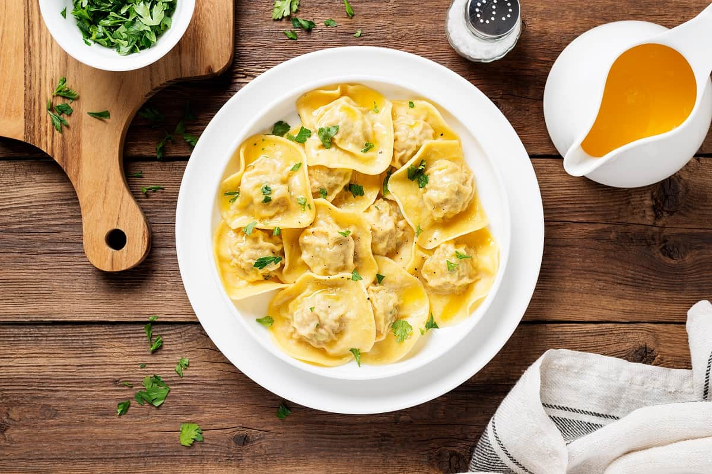

Ravioles rellenos de carne

Ingredientes
Para la masa
- 500gr de harina de trigo
- 3 huevos
- 1 cda de aceito de oliva virgen
- ½ cdta de sal
Para el relleno
- 300 gr carne picada
- ½ cebolla picada en cubos pequeños
- 1 diente de ajo
- 50 gr queso rallado
- 1 chorrito de Vino blanco
- Sal y pimienta al gusto
Para la salsa
- 120gr de crema de leche
- 1 cdta. orégano
- 1 pizca de sal
- 1 pizca de pimienta
- ½ vaso de vino blanco
- ½ taza queso parmesano
Instrucciones
Preparación de la masa
- En un cuenco hacemos una mezcla con la harina, el huevo, aceite de oliva y una pizca de sal.
- Amasamos bien hasta que haya una masa compacta, suave y manejable y estiramos sobre una superficie enharinada.
- Cortamos la masa en círculos. Para ello podemos ayudarnos de un cortapastas especial de cocina, pero si no disponemos de ello podemos hacerlo con un envase que tenga esa forma.
Armado y cocción de ravioles
- Colocamos en el centro de la mitad de los círculos un poco de la mezcla de relleno.
- Mojamos los bordes con un poquito de agua y tapamos con el resto de círculos de masa cerrándolos bien. Este procedimiento lo repetimos hasta terminar toda la masa.
- Puedes ayudarte con un tenedor pequeño para asegurarte que los bordes queden bien sellados.
- Cocemos la pasta en agua hirviendo con sal durante 5 minutos y escurrimos.
Para la salsa
- En una sartén caliente agrega la crema de leche , también añade un poco de vino blanco para darle un toque especial a la salsa. Apaga el fuego para evitar que se seque la salsa.
- Añade un poco de orégano y el queso, remueve bien para que no se pegue.
- Sal pimienta y apaga el fuego para evitar que se seque la salsa.
- Añade a la sartén los raviolis ya cocidos en agua. Sirve y agrega más queso si lo deseas.